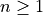
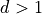
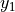
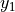
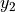
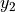
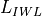
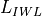
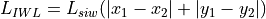
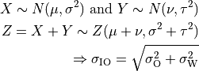

cd .. include:: replace.txt
8.1. Design documentation¶
8.1.1. Overview¶
The Buildings module provides:
a new class (
Building) that models the presence of a building in a simulation scenario;a new class (
MobilityBuildingInfo) that allows to specify the location, size and characteristics of buildings present in the simulated area, and allows the placement of nodes inside those buildings;a container class with the definition of the most useful pathloss models and the correspondent variables called
BuildingsPropagationLossModel.a new propagation model (
HybridBuildingsPropagationLossModel) working with the mobility model just introduced, that allows to model the phenomenon of indoor/outdoor propagation in the presence of buildings.a simplified model working only with Okumura Hata (
OhBuildingsPropagationLossModel) considering the phenomenon of indoor/outdoor propagation in the presence of buildings.a channel condition model (
BuildingsChannelConditionModel) which determined the LOS/NLOS channel condition based on theBuildingobjects deployed in the scenario.hybrid channel condition models (
ThreeGppV2vUrbanChannelConditionModelandThreeGppV2vHighwayChannelConditionModel) specifically designed to model vehicular environments (more information can be found in the documentation of the propagation module)
The models have been designed with LTE in mind, though their implementation is in fact independent from any LTE-specific code, and can be used with other ns-3 wireless technologies as well (e.g., wifi, wimax).
The HybridBuildingsPropagationLossModel pathloss model included is obtained through a combination of several well known pathloss models in order to mimic different environmental scenarios such as urban, suburban and open areas. Moreover, the model considers both outdoor and indoor indoor and outdoor communication has to be included since HeNB might be installed either within building and either outside. In case of indoor communication, the model has to consider also the type of building in outdoor <-> indoor communication according to some general criteria such as the wall penetration losses of the common materials; moreover it includes some general configuration for the internal walls in indoor communications.
The OhBuildingsPropagationLossModel pathloss model has been created for simplifying the previous one removing the thresholds for switching from one model to other. For doing this it has been used only one propagation model from the one available (i.e., the Okumura Hata). The presence of building is still considered in the model; therefore all the considerations of above regarding the building type are still valid. The same consideration can be done for what concern the environmental scenario and frequency since both of them are parameters of the model considered.
8.1.2. The Building class¶
The model includes a specific class called Building which contains a ns3 Box class for defining the dimension of the building. In order to implements the characteristics of the pathloss models included, the Building class supports the following attributes:
building type:
Residential (default value)
Office
Commercial
external walls type
Wood
ConcreteWithWindows (default value)
ConcreteWithoutWindows
StoneBlocks
number of floors (default value 1, which means only ground-floor)
number of rooms in x-axis (default value 1)
number of rooms in y-axis (default value 1)
The Building class is based on the following assumptions:
a buildings is represented as a rectangular parallelepiped (i.e., a box)
the walls are parallel to the x, y, and z axis
a building is divided into a grid of rooms, identified by the following parameters:
number of floors
number of rooms along the x-axis
number of rooms along the y-axis
the z axis is the vertical axis, i.e., floor numbers increase for increasing z axis values
the x and y room indices start from 1 and increase along the x and y axis respectively
all rooms in a building have equal size
8.1.3. The MobilityBuildingInfo class¶
The MobilityBuildingInfo class, which inherits from the ns3 class Object, is in charge of maintaining information about the position of a node with respect to building. The information managed by MobilityBuildingInfo is:
whether the node is indoor or outdoor
if indoor:
in which building the node is
in which room the node is positioned (x, y and floor room indices)
The class MobilityBuildingInfo is used by BuildingsPropagationLossModel class, which inherits from the ns3 class PropagationLossModel and manages the pathloss computation of the single components and their composition according to the nodes’ positions. Moreover, it implements also the shadowing, that is the loss due to obstacles in the main path (i.e., vegetation, buildings, etc.).
It is to be noted that, MobilityBuildingInfo can be used by any other propagation model. However, based on the information at the time of this writing, only the ones defined in the building module are designed for considering the constraints introduced by the buildings.
8.1.4. ItuR1238PropagationLossModel¶
This class implements a building-dependent indoor propagation loss model based on the ITU P.1238 model, which includes losses due to type of building (i.e., residential, office and commercial). The analytical expression is given in the following.
where:
: power loss coefficient [dB]
: number of floors between base station and mobile ()
: frequency [MHz]
: distance (where ) [m]
8.1.5. BuildingsPropagationLossModel¶
The BuildingsPropagationLossModel provides an additional set of building-dependent pathloss model elements that are used to implement different pathloss logics. These pathloss model elements are described in the following subsections.
8.1.5.1. External Wall Loss (EWL)¶
This component models the penetration loss through walls for indoor to outdoor communications and vice-versa. The values are taken from the [cost231] model.
Wood ~ 4 dB
Concrete with windows (not metallized) ~ 7 dB
Concrete without windows ~ 15 dB (spans between 10 and 20 in COST231)
Stone blocks ~ 12 dB
8.1.5.2. Internal Walls Loss (IWL)¶
This component models the penetration loss occurring in indoor-to-indoor communications within the same building. The total loss is calculated assuming that each single internal wall has a constant penetration loss , and approximating the number of walls that are penetrated with the manhattan distance (in number of rooms) between the transmitter and the receiver. In detail, let  , ,
, ,  ,  denote the room number along the
,  denote the room number along the  and
and  axis respectively for user 1 and 2; the total loss  is calculated as
axis respectively for user 1 and 2; the total loss  is calculated as

8.1.5.3. Height Gain Model (HG)¶
This component model the gain due to the fact that the transmitting device is on a floor above the ground. In the literature [turkmani] this gain has been evaluated as about 2 dB per floor. This gain can be applied to all the indoor to outdoor communications and vice-versa.
8.1.5.4. Shadowing Model¶
The shadowing is modeled according to a log-normal distribution with variable standard deviation as function of the relative position (indoor or outdoor) of the MobilityModel instances involved. One random value is drawn for each pair of MobilityModels, and stays constant for that pair during the whole simulation. Thus, the model is appropriate for static nodes only.
The model considers that the mean of the shadowing loss in dB is always 0. For the variance, the model considers three possible values of standard deviation, in detail:
outdoor (
m_shadowingSigmaOutdoor, default value of 7 dB) .indoor (
m_shadowingSigmaIndoor, default value of 10 dB) .external walls penetration (
m_shadowingSigmaExtWalls, default value 5 dB)
The simulator generates a shadowing value per each active link according to nodes’ position the first time the link is used for transmitting. In case of transmissions from outdoor nodes to indoor ones, and vice-versa, the standard deviation () has to be calculated as the square root of the sum of the quadratic values of the standard deviatio in case of outdoor nodes and the one for the external walls penetration. This is due to the fact that that the components producing the shadowing are independent of each other; therefore, the variance of a distribution resulting from the sum of two independent normal ones is the sum of the variances.

8.1.6. Pathloss logics¶
In the following we describe the different pathloss logic that are implemented by inheriting from BuildingsPropagationLossModel.
8.1.6.1. HybridBuildingsPropagationLossModel¶
The HybridBuildingsPropagationLossModel pathloss model included is obtained through a combination of several well known pathloss models in order to mimic different outdoor and indoor scenarios, as well as indoor-to-outdoor and outdoor-to-indoor scenarios. In detail, the class HybridBuildingsPropagationLossModel integrates the following pathloss models:
OkumuraHataPropagationLossModel (OH) (at frequencies > 2.3 GHz substituted by Kun2600MhzPropagationLossModel)
ItuR1411LosPropagationLossModel and ItuR1411NlosOverRooftopPropagationLossModel (I1411)
ItuR1238PropagationLossModel (I1238)
the pathloss elements of the BuildingsPropagationLossModel (EWL, HG, IWL)
The following pseudo-code illustrates how the different pathloss model elements described above are integrated in HybridBuildingsPropagationLossModel:
if (txNode is outdoor)
then
if (rxNode is outdoor)
then
if (distance > 1 km)
then
if (rxNode or txNode is below the rooftop)
then
L = I1411
else
L = OH
else
L = I1411
else (rxNode is indoor)
if (distance > 1 km)
then
if (rxNode or txNode is below the rooftop)
L = I1411 + EWL + HG
else
L = OH + EWL + HG
else
L = I1411 + EWL + HG
else (txNode is indoor)
if (rxNode is indoor)
then
if (same building)
then
L = I1238 + IWL
else
L = I1411 + 2*EWL
else (rxNode is outdoor)
if (distance > 1 km)
then
if (rxNode or txNode is below the rooftop)
then
L = I1411 + EWL + HG
else
L = OH + EWL + HG
else
L = I1411 + EWL
We note that, for the case of communication between two nodes below rooftop level with distance is greater then 1 km, we still consider the I1411 model, since OH is specifically designed for macro cells and therefore for antennas above the roof-top level.
For the ITU-R P.1411 model we consider both the LOS and NLoS versions. In particular, we considers the LoS propagation for distances that are shorted than a tunable threshold (m_itu1411NlosThreshold). In case on NLoS propagation, the over the roof-top model is taken in consideration for modeling both macro BS and SC. In case on NLoS several parameters scenario dependent have been included, such as average street width, orientation, etc. The values of such parameters have to be properly set according to the scenario implemented, the model does not calculate natively their values. In case any values is provided, the standard ones are used, apart for the height of the mobile and BS, which instead their integrity is tested directly in the code (i.e., they have to be greater then zero). In the following we give the expressions of the components of the model.
We also note that the use of different propagation models (OH, I1411, I1238 with their variants) in HybridBuildingsPropagationLossModel can result in discontinuities of the pathloss with respect to distance. A proper tuning of the attributes (especially the distance threshold attributes) can avoid these discontinuities. However, since the behavior of each model depends on several other parameters (frequency, node height, etc), there is no default value of these thresholds that can avoid the discontinuities in all possible configurations. Hence, an appropriate tuning of these parameters is left to the user.
8.1.6.2. OhBuildingsPropagationLossModel¶
The OhBuildingsPropagationLossModel class has been created as a simple means to solve the discontinuity problems of HybridBuildingsPropagationLossModel without doing scenario-specific parameter tuning. The solution is to use only one propagation loss model (i.e., Okumura Hata), while retaining the structure of the pathloss logic for the calculation of other path loss components (such as wall penetration losses). The result is a model that is free of discontinuities (except those due to walls), but that is less realistic overall for a generic scenario with buildings and outdoor/indoor users, e.g., because Okumura Hata is not suitable neither for indoor communications nor for outdoor communications below rooftop level.
In detail, the class OhBuildingsPropagationLossModel integrates the following pathloss models:
OkumuraHataPropagationLossModel (OH)
the pathloss elements of the BuildingsPropagationLossModel (EWL, HG, IWL)
The following pseudo-code illustrates how the different pathloss model elements described above are integrated in OhBuildingsPropagationLossModel:
if (txNode is outdoor)
then
if (rxNode is outdoor)
then
L = OH
else (rxNode is indoor)
L = OH + EWL
else (txNode is indoor)
if (rxNode is indoor)
then
if (same building)
then
L = OH + IWL
else
L = OH + 2*EWL
else (rxNode is outdoor)
L = OH + EWL
We note that OhBuildingsPropagationLossModel is a significant simplification with respect to HybridBuildingsPropagationLossModel, due to the fact that OH is used always. While this gives a less accurate model in some scenarios (especially below rooftop and indoor), it effectively avoids the issue of pathloss discontinuities that affects HybridBuildingsPropagationLossModel.